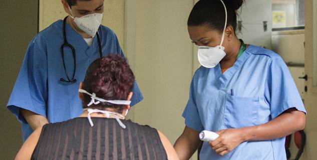
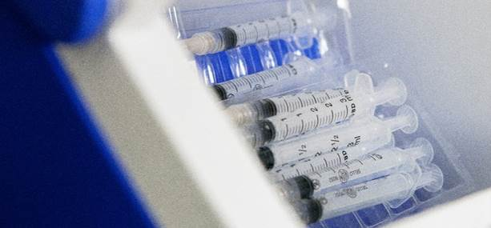
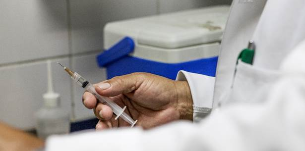

|
|
|
Como temos visto, o planejamento da campanha de vacinação
ocorre por meio de
passos de organização
. Porém, esses passos não precisam ocorrer de forma sequencial, mas é importante que todos ocorram. Nesse sentido, já vimos que devemos identificar a população-alvo, ou seja, aqueles que primeiro deverão se vacinar, e com isso listar os insumos e recursos necessários para atingir o objetivo final. Não podemos nos esquecer de elaborar
as
estratégias q
ue
serão utilizadas para a vacinação, considerando todos os grupos prioritários. A seguir, vamos tratar de mais dois passos para um bom planejamento, agora pensando nos serviços de vacinação e na rede frio.
|
|
|
|
É importante pensar que os serviços de vacinação já têm sua
rotina estabelecida
e que a entrada de uma nova campanha
não pode impactar nesses serviços
, ou deveria impactar o menos possível. Entretanto, precisamos pensar também que essa é uma situação de urgência e que a vacinação para
a
Covid-19 deve ser realizada o quanto antes, pois isso tem impacto direto no número e gravidade dos casos, podendo até salvar muitas vidas.
|
|
Sendo assim, os serviços de vacinação deverão ser reorganizados e adequados de acordo com o
cenário de transmissão
local da Covid-19. Essa reorganização deve ocorrer através da adoção de
boas práticas
que visem, principalmente, a prevenção e controle de infecções (OMS, 2020c).
|
|
O
primeir
o
fato
para pensar na organização do serviço
para
atender esse público é garantir que se tenha o
mínimo de risco de transmissão
. É recomendado, que aquelas pessoas que estão apresentando
sintomas não devem ser vacinadas
. Entretanto, é possível que algumas delas, na expectativa da vacinação,
procurem
o serviço de vacinação. Dessa forma, é recomendado que a população passe por
triagem para Covid-19
antes da entrada nos locais de vacinação. Essa triagem deve incluir uma
avaliação de risco de exposição à Covid-19
, ou seja, o profissional encarregado pela triagem deverá investigar se o indivíduo que deseja entrar no local de vacinação teve contato com um caso suspeito ou confirmado de Covid-19, além de avaliar a presença de sintomas de síndrome gripal. A vacinação deve prosseguir somente se a triagem for negativa, caso a triagem seja positiva a vacinação não deverá prosseguir e a equipe deve oferecer uma máscara médica ao paciente, além de encaminhá-lo ao serviço de avaliação da Covid-19 de um estabelecimento de saúde próximo.
|
|

Figure 2 - Triagem ambulatorial para averiguação de sintomas respiratórios relacionados à covid-19. Instituto Nacional de Infectologia, INI. Fonte: https://www.fiocruzimagens.fiocruz.br/media.details.php?mediaID=6847
|
|
Nos centros de vacinação as
principais recomendações
quanto a organização das atividades são (OPAS, 2020b):
|
-
Realizar as atividades de vacinação em
locais bem ventilados
, caso não seja possível realizar em locais abertos, é recomendado que as portas e janelas estejam abertas para maior circulação do ar.
-
Desinfetar
com frequência a sala de vacina. É imprescindível que o serviço de vacinação tenha um protocolo de desinfecção atualizado em uso.
-
Disponibilizar para a população-alvo da campanha e seus acompanhantes, um lavatório para
higienização das mãos
com água e sabão ou preparação alcoólica a 60-80% na entrada das instalações.
-
Limitar apenas um acompanhante
para cada pessoa que será vacinada.
-
Orientar o
distanciamento social
de 1 metro entre os participantes e acompanhantes.
-
Adotar estratégias para
evitar aglomerações
, como utilizar espaços ao ar livre e adotar o distanciamento social dentro do estabelecimento de saúde, marcações no chão e bloqueio de cadeiras.
-
Separar, sempre que possível, o centro de vacinação dos serviços terapêuticos da unidade de saúde.
|
|
Os
vacinadores
também deverão seguir recomendações durante os procedimentos na sala de vacina, que incluem (OPAS, 2020b; UNICEF, 2020):
|
|
Identificada a população-alvo para a vacinação dentro do município, o próximo passo para o planejamento será estimar quantas pessoas, separadamente, formam essas populações. Avaliar esses números é imprescindível para (OMS, 2020c):
|
-
Higienizar as mãos
após cada aplicação de vacina, utilizando água e sabão ou preparação alcoólica a 60-80%.
-
Manter suas
mãos longe do rosto e do EPI
que está utilizando, além de evitar tocar desnecessariamente superfícies e materiais.
-
Evitar falar
durante todo o procedimento na sala de vacinação e orientar que o usuário também evite falar durante o procedimento.
|
|
O uso de luvas não é necessário, a menos que o vacinador ou o paciente apresente lesões, cortes ou erupções cutâneas. Nesses casos, o vacinador deve trocar de luvas entre cada paciente, descartando-as em um recipiente com tampa e higienizando as mãos a cada troca.
|
|
Em territórios onde não há a obrigatoriedade do uso de máscaras, o vacinador deve considerar seu uso de acordo com a situação da transmissão comunitária de Covid-19 na área. Em áreas com ampla transmissão comunitária o vacinador deve considerar o uso de máscara cirúrgica durante todo o turno de vacinação. Em áreas sem ampla transmissão comunitária da doença, o uso de máscaras não é considerado necessário. Já em áreas onde a transmissão não é bem conhecida, o uso de máscaras deve ser considerado pelos vacinadores.
|
|
Caso o vacinador apresente qualquer sintoma de doença respiratória, este não poderá aplicar vacinas, devendo buscar atendimento médico de acordo com as recomendações locais.
|
|
|
|

Figure 3 - Seringas para vacinação. https://www.fiocruzimagens.fiocruz.br/media.details.php?mediaID=5690
|
|
A cadeia de abastecimento é a chave para que as vacinas contra a Covid-19 sejam distribuídas para a população-alvo de acordo com as estratégias de vacinação que serão adotadas (OMS, 2020c). O
acondicionamento das vacinas
é uma etapa crítica, erros e falhas na rede de frio podem comprometer a eficácia das vacinas e resultar na redução ou ausência do efeito esperado de imunização contra a Covid-19 (OMS, 2014).
|
|
|
Saiba Mais!
Você gostaria de ter mais informações sobre a produção das vacinas? Vale a pena conferir o link do Ministério da Saúde do Brasil que traz um resumo de como vem sendo realizado.
https://www.gov.br/inpi/pt-br/servicos/patentes/tecnologias-para-covid-19/Vacinas
|
|
|
Para que uma vacina possa criar defesas ou anticorpos, é preciso que a atividade de vacinação seja cercada de cuidados. A manutenção da qualidade das vacinas depende de importantes procedimentos adotados antes da administração desses produtos na população. Dessa forma, para garantir a
manutenção da qualidade das vacinas
, os municípios devem
reunir
informações sobre a capacidade de sua rede de frio e mobilizar os recursos necessários para manutenção da qualidade dos imunizantes durante a distribuição e transporte até as salas de vacinação ou atividades de vacinação extramuros (OMS, 2020c; OPAS, 2020a).
|
|

Figure 4 - Sala de Vacinação - Fonte: https://www.fiocruzimagens.fiocruz.br/media.details.php?mediaID=5128
|
|
A análise da capacidade da rede frio municipal deve ser realizada com a quantificação dos
insumos necessários
e da capacidade de armazenamento da central de frio do município. Os insumos que compreendem a rede de frio do município também deverão ser
mapeados e quantificados
, lembre-se que estes vão além de refrigeradores e freezers, insumos básicos da sala de vacinação, como caixas térmicas, bobinas reutilizáveis e instrumentos de medição de temperatura também compreendem a rede de frio (BRASIL, 2017). Esses insumos devem ser quantificados e previstos tanto para uso diário na sala de vacinação como para as estratégias de
vacinação extramuros
.
|
|
A
capacidade de armazenamento
da rede de frio do município deve ser preparada para garantir a manutenção da qualidade das vacinas que irão compor o rol de imunizantes disponíveis na campanha. A maioria das vacinas contra a Covid-19 são armazenadas em temperaturas de geladeira comum, entre +2ºC e +8ºC. Entretanto, algumas vacinas poderão necessitar de armazenamento a temperatura ultrabaixa de -70ºC, onde ao invés de bobinas reutilizáveis necessitarão de gelo seco para manutenção da temperatura fora dos ultracongeladores (OMS, 2020c).
|
|
Confira abaixo os principais
pré-requisitos
para a implantação adequada de estratégias para a cadeia de abastecimento (OMS, 2020c):
|
-
Estimar as necessidades tanto de doses de vacinas como de
logística
;
-
Avaliar a
capacidade de armazenamento
disponível: inclua nesse levantamento as três faixas diferentes de temperatura, ex. +2ºC a +8ºC, -20ºC e -70ºC;
-
Identificar a
capacidade máxima
de armazenamento: nesse levantamento devem ser incluídos todos os equipamentos que poderão ser deslocados para a campanha de vacinação, como aqueles da divisão farmacêutica, laboratórios, entre outros;
-
Elaborar um
plano de distribuição
de acordo com a população alvo, o número de vacinadores e equipes de monitoramento;
-
Estabelecer um
sistema para rastreio das vacinas
: o rastreio evitará o risco de desvio e falsificação das vacinas;
-
Planejar a
segurança das vacinas
e da equipe envolvida: devido à alta demanda por vacinas contra a Covid-19 a segurança deve ser realizada em todas as etapas envolvidas, inclusive durante o trânsito das vacinas.
|
|
Os municípios que não tiverem condições de garantir o armazenamento, distribuição, monitoramento de temperatura e rastreio de estoque das vacinas, podem
terceirizar essas etapas
com a contratação de empresas especialistas nesse tipo de gerenciamento. Contudo, essas empresas do setor privado deverão participar ativamente da fase de planejamento para a implementação da vacina (OMS, 2020c).
|
|
Por fim, o município e/ou a empresa terceirizada devem planejar a
logística reversa
envolvendo as vacinas contra a Covid-19. A logística reversa será importante para realocação de doses, devolver
frascos não utilizados
, e dar a destinação correta para doses descartadas.
|
|
|
|
Na aula de hoje você viu a importância de se preparar para a campanha de vacinação, considerando os serviços de vacinação e a rede de frio onde essas vacinas serão armazenadas. Pensar que esses serviços já desenvolvem atividades de rotina e que precisaram se adequar às novas demandas, sem prejudicar as antigas. Estamos evidenciando um momento de emergência, porém não devemos nos descuidar das outras doenças para que a situação, que já é difícil, não piore.
|
|
Para a campanha de vacinação contra a Covid-19 é importante que sigamos os 10 passos. Já tratamos de identificar a população alvo, os insumos e recursos necessários, as estratégias de vacinação e a organização dos serviços de vacinação e rede de frio. Vamos descobrir quais serão os próximos passos? Vem com a gente!
|